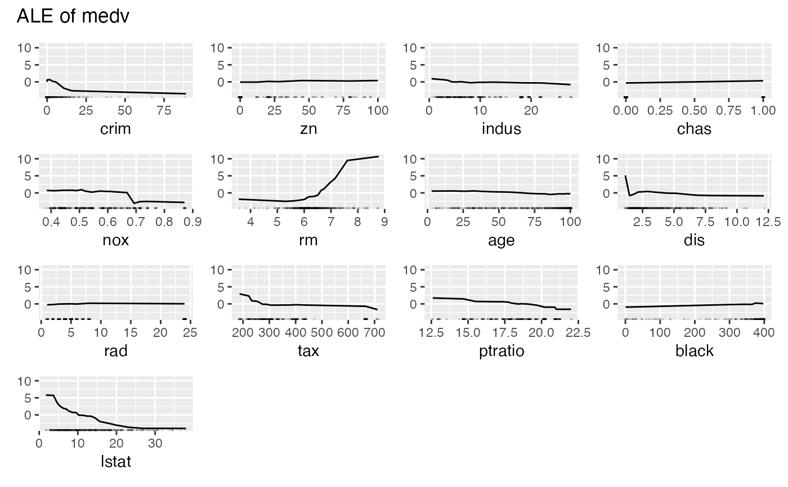
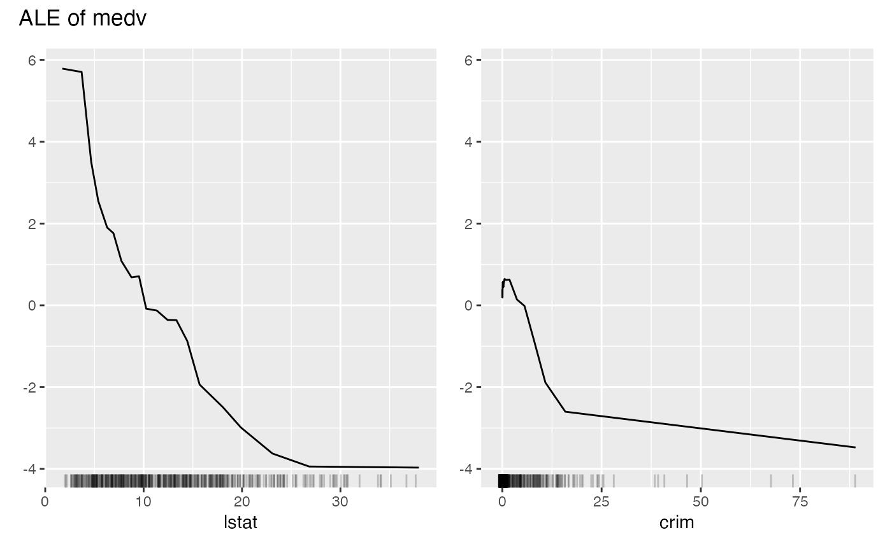

plot.FeatureEffect() plots the results of a FeatureEffect object.
# S3 method for FeatureEffects
plot(x, features = NULL, nrows = NULL, ncols = NULL, fixed_y = TRUE, ...)A FeatureEffect object.
character For which features should the effects be plotted? Default is all features. You can also sort the order of the plots with this argument.
The number of rows in the table of graphics
The number of columns in the table of graphics
Should the y-axis range be the same for all effects? Defaults to TRUE.
Further arguments for FeatureEffect$plot()
grid object
In contrast to other plot methods in iml, for FeatureEffects the returned plot is not a ggplot2 object, but a grid object, a collection of multiple ggplot2 plots.
# We train a random forest on the Boston dataset:
library("randomForest")
data("Boston", package = "MASS")
rf <- randomForest(medv ~ ., data = Boston, ntree = 50)
mod <- Predictor$new(rf, data = Boston)
# Compute the partial dependence for the first feature
eff <- FeatureEffects$new(mod)
# Plot the results directly
eff$plot()

# For a subset of features
eff$plot(features = c("lstat", "crim"))

# With a different layout
eff$plot(nrows = 2)